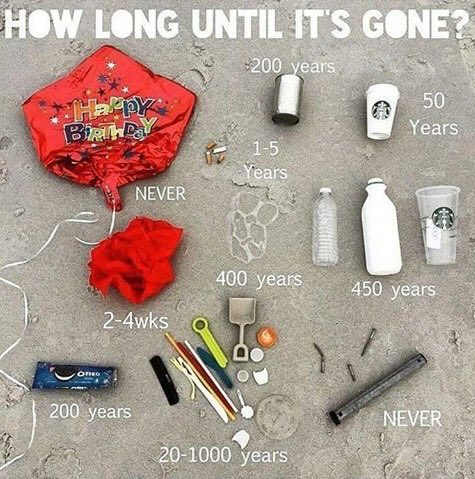

Formed from the confluence of five estuaries: the rivers Kent, Keer, Leven, Lune and Wyre, Morecambe Bay is the largest continuous area of tidal mudflats in the UK. The tidal flats are supported by extensive salt marshes, making up 5% of the UK total
The mudflats support a rich and diverse range of invertebrates, shorebirds, fish. The salt marshes support grazing animals, and a number of rare plant species
The Bay is a complex and fragile ecosystem, with internationally important assemblages of wildlife. However, it must also support industries for the 200,000 people that live and work in the area, and these all have an impact.
Impacts on the Bay
Litter, from tourism
Water Quality, from agriculture
Climate Change, from human activity in general
Polltion, from industry
Litter
The primary sources of litter in the Bay are tourists/visitors, industry (fishing), and plastic waste from households.
The amount and type of litter varies throughout the year, and is dependent on the recent local weather.
Marine litter is a known hazard to wildlife and human health.
Many common types of litter stay in the environment for decades, if not longer.

The MCS reported in 2014 that the North-West beaches have less than 2500 items of litter per square km, and a reduction of 70% over previous years
Combining data from multiple volunteer groups suggests approximately 40 tonnes of litter have been picked up around the Bay by volunteers since 2003
Water Quality
Water quality in the Bay is affected by agricultural and land management practices in the catchments of the rivers that flow into the bay.
Sediment and fertiliser run-off affect water quality and nutrient content, whilst moorland drainage and watercourse alterations affect and obstruct water flow
These affect the nutrient levels in bay, and reduce wildlife mobility and habitats.
Climate Change
The Bay contains many habitats considered vulnerable to climate change.
The saltmarsh, saline lagoons and cliff areas are at highest risk, whereas the estuarine and intertidal mud flats are considered a lower risk.
Sea-level change and increased storm surges are likely to significantly reshape the coastline.
Changing rainfall patterns and intensity will affect fluvial and estuarine processes
The need to protect human assets will put increased pressure on natural habitats
Industry: Gas
The Morecambe Bay gas field is the second largest in the UK. At it's peak it produced 15% of Britain's gas supply, but production has declined.
The gas fields were discovered in the 70's and the first gas was extracted in 1985.
Levels of hydrocarbons and metals in the water and surface sediments have been compared to their levels before the gas field was developed.
There are high levels of contamination throughout the bay and wider area, initially thought to be related to gas extraction, but current research suggests over 80% derives from riverine input.
Industry: Nuclear
Radioactive waste has been discharged into the Irish Sea from Sellafield since 1952, with a peak in the 1970s and a general decline since then.
The muddy sediments in the bay act as a sink for elements such as Plutonium and Caesium, due to sediment activity and dispersal
Greenpeace describes the Irish Sea as the most radioactively contaminated sea in the world, with approximately 8 million litres of nuclear waste being discharged into it every day.
Finally, what's in a name?
The name "Morecambe Bay" can be traced back to the Greek Astronomer Ptolemy
He noted a place called Morikambe eischusis somewhere on the west coast between the Ribble and the Solway.
It took until the 18th century for the name to be more commonly adopted, and even then there was still some uncertainty as to what the name actually means- tidal flats, crooked sea, curved coast, or just the Bay!